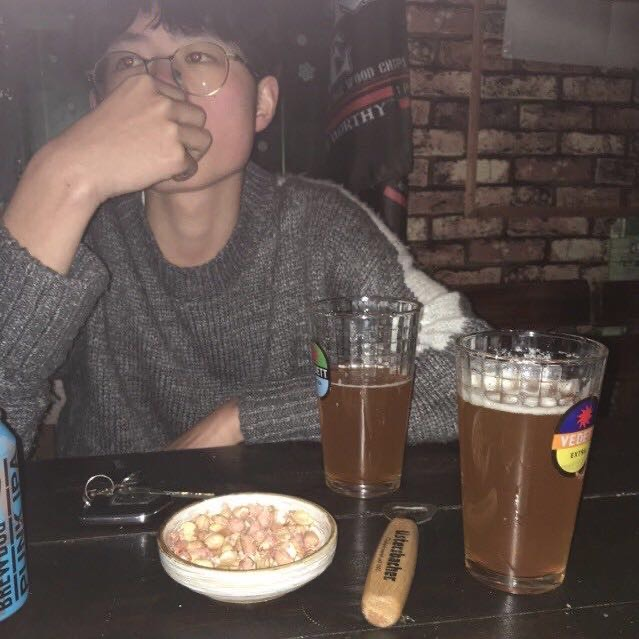
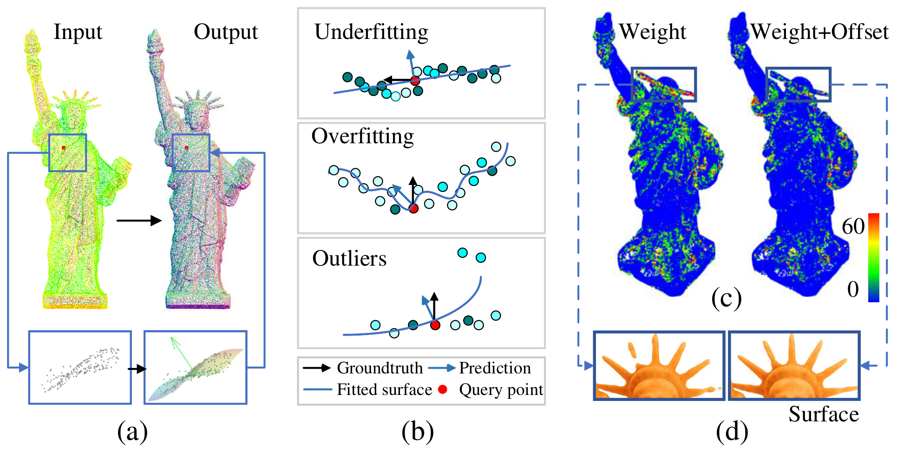

|  | Zhu, Runsong |
Hi, I am Runsong Zhu (朱润松), a master in LIESMARS, Wuhan Univeristy advised by Prof. Bisheng Yang and Prof. Zhen Dong. Before that, I received my bachelor degree in central south university.
My research is mainly focused on point cloud processing, specifically, low-level geometry task and surface reconstruction.
|  |
AdaFit: Rethinking Learning-Based Normal Estimation on Point Clouds. |